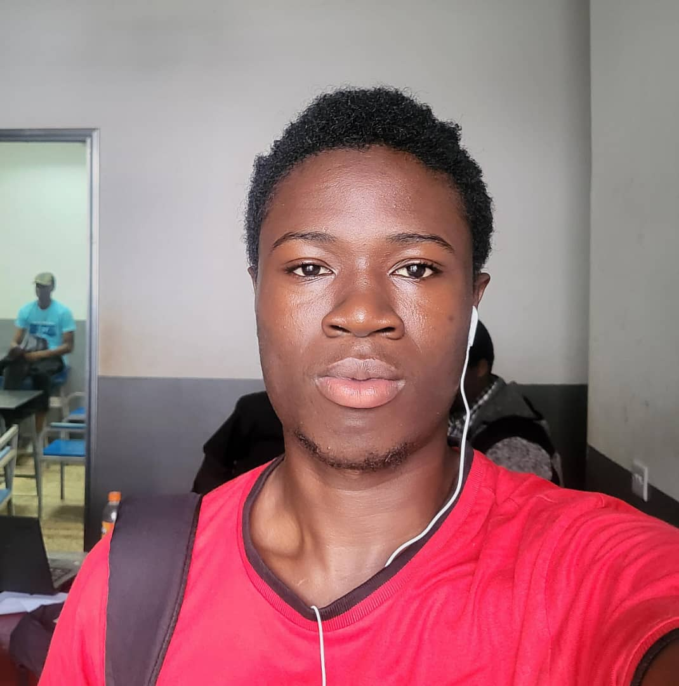
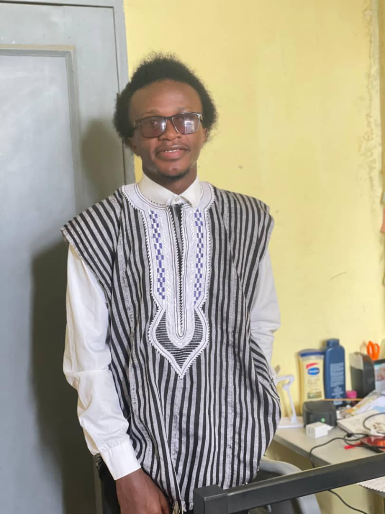

Meet Our Team

Ahmed Tejan
Ahmed is an Electrical and Electronics Engineering student at Fourah Bay College. He is passionate about frontend development, tech innovation, and freelances as a photographer/videographer. He also leads team projects and handles interface integration.

Nathaniel Berdie
Nathaniel is a creative designer with a sharp eye for user experience. He handles the branding, color choices, layouts, and overall site aesthetics. His strength lies in UI/UX design and visual storytelling and Photography.

Samwell B. H Banister
Samwell is a backend developer and database enthusiast. He manages logic, automation, and ensures everything behind the scenes works flawlessly. He also helps in integrating APIs and optimizing performance.